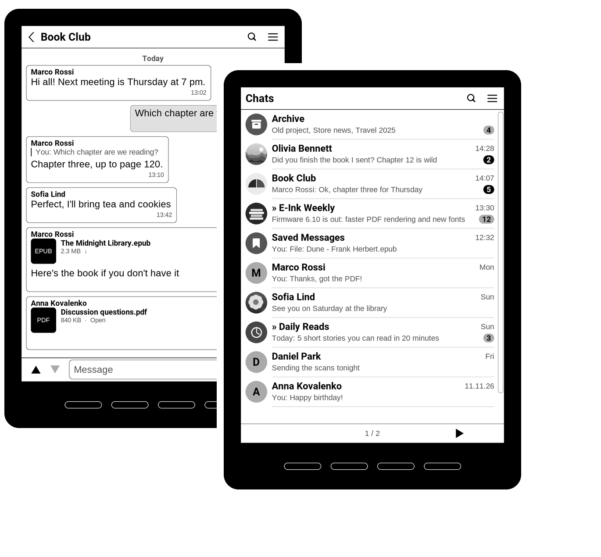
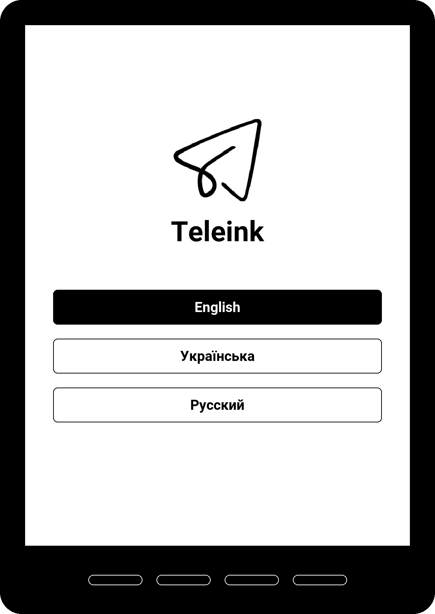
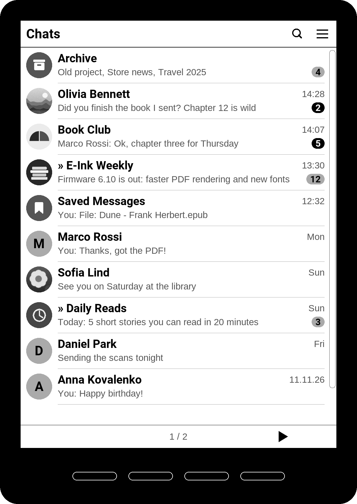
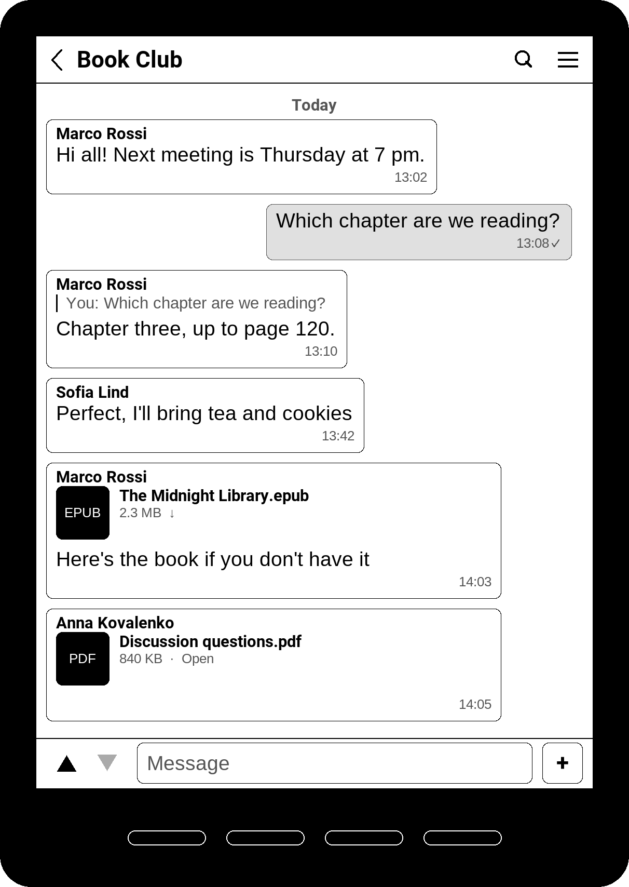
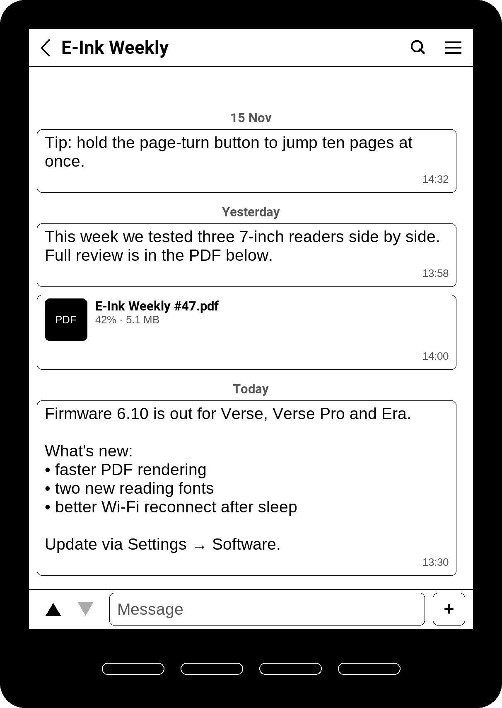

Telegram on your PocketBook Telegram на вашому PocketBook Telegram на вашем PocketBook
Teleink is a free unofficial Telegram client for PocketBook e-readers. Read chats and channels on e-ink — and send books to your reader in seconds.
Teleink — безкоштовний неофіційний клієнт Telegram для рідерів PocketBook. Читайте чати й канали на e-ink і закидайте книги на рідер за лічені секунди.
Teleink — бесплатный неофициальный клиент Telegram для ридеров PocketBook. Читайте чаты и каналы на e-ink и отправляйте книги на ридер за секунды.

The easiest way to send a book Найпростіший спосіб надіслати книгу Самый простой способ отправить книгу
- Send the fileНадішліть файлОтправьте файл From your phone or computer to Saved Messages or any chat. З телефона чи комп'ютера у «Збране» або в будь-який чат. С телефона или компьютера в «Избранное» или любой чат.
- Open TeleinkВідкрийте TeleinkОткройте Teleink On the reader, in the same chat. На рідері, у тому самому чаті. На ридере, в том же чате.
- Tap and readТоркніться й читайтеНажмите и читайте EPUB, PDF, FB2 and other formats open in the built-in reader. EPUB, PDF, FB2 та інші формати відкриваються у вбудованій читалці. EPUB, PDF, FB2 и другие форматы открываются во встроенной читалке.
What it can doЩо вмієЧто умеет
Downloads/Teleink and send files from the reader.
Завантаження в Downloads/Teleink і надсилання файлів з рідера.
Загрузка в Downloads/Teleink и отправка файлов с ридера.




Install in a minute Встановлення за хвилину Установка за минуту
- DownloadЗавантажтеСкачайте The zip from Releases and unpack it. Архів із Releases і розпакуйте його. Архив из Releases и распакуйте его.
- Connect the readerПідключіть рідерПодключите ридер With a USB cable and choose “PC link”. USB-кабелем і оберіть «Зв'язок з ПК». USB-кабелем и выберите «Связь с ПК».
- CopyСкопіюйтеСкопируйте Everything from the archive to the root of the reader, then eject it. Усе з архіву в корінь рідера, потім безпечно від'єднайте. Всё из архива в корень ридера, затем безопасно отключите.
- Log inУвійдітьВойдите Open Teleink in Applications and enter your phone number. Відкрийте Teleink у «Програмах» і введіть номер телефону. Откройте Teleink в «Приложениях» и введите номер телефона.
Works on PocketBook Verse, Verse Pro, Era, InkPad, Touch Lux, Touch HD and other models with firmware 6.x. Працює на PocketBook Verse, Verse Pro, Era, InkPad, Touch Lux, Touch HD та інших моделях із прошивкою 6.x. Работает на PocketBook Verse, Verse Pro, Era, InkPad, Touch Lux, Touch HD и других моделях с прошивкой 6.x.
PrivacyПриватністьПриватность
- The reader connects directly to Telegram servers. There are no servers of ours in between.
- Your session and files stay on the reader. Log out from the menu at any time.
- No analytics, no ads, no tracking. The code is open on GitHub.
- Рідер підключається напряму до серверів Telegram. Жодних наших серверів посередині.
- Сесія й файли зберігаються лише на рідері. Вийти з акаунта можна в меню будь-коли.
- Без аналітики, реклами й стеження. Код відкритий на GitHub.
- Ридер подключается напрямую к серверам Telegram. Никаких наших серверов посередине.
- Сессия и файлы хранятся только на ридере. Выйти из аккаунта можно в меню в любой момент.
- Без аналитики, рекламы и слежки. Код открыт на GitHub.
FAQ
Is this an official Telegram app?
Це офіційний застосунок Telegram?
Это официальное приложение Telegram?
No. Teleink is an independent client built on TDLib, Telegram's official library for third-party apps.
Ні. Teleink — незалежний клієнт на основі TDLib, офіційної бібліотеки Telegram для сторонніх застосунків.
Нет. Teleink — независимый клиент на основе TDLib, официальной библиотеки Telegram для сторонних приложений.
Is it free?
Це безкоштовно?
Это бесплатно?
Yes, completely. The source code is under the MIT license.
Так, повністю. Код відкритий під ліцензією MIT.
Да, полностью. Код открыт под лицензией MIT.
Where are downloaded files?
Де завантажені файли?
Где скачанные файлы?
In Downloads/Teleink on the reader.
У папці Downloads/Teleink на рідері.
В папке Downloads/Teleink на ридере.
How do I get back to the chat from a PDF?
Як повернутися з PDF у чат?
Как вернуться из PDF в чат?
Tap the middle of the page to open the reader menu, then choose Back.
Торкніться середини сторінки, щоб відкрити меню читалки, і оберіть «Назад».
Нажмите на середину страницы, чтобы открыть меню читалки, и выберите «Назад».
How do I uninstall it?
Як видалити?
Как удалить?
Log out in the menu, then delete applications/Teleink.app from the reader.
Вийдіть з акаунта в меню, потім видаліть applications/Teleink.app з рідера.
Выйдите из аккаунта в меню, затем удалите applications/Teleink.app с ридера.